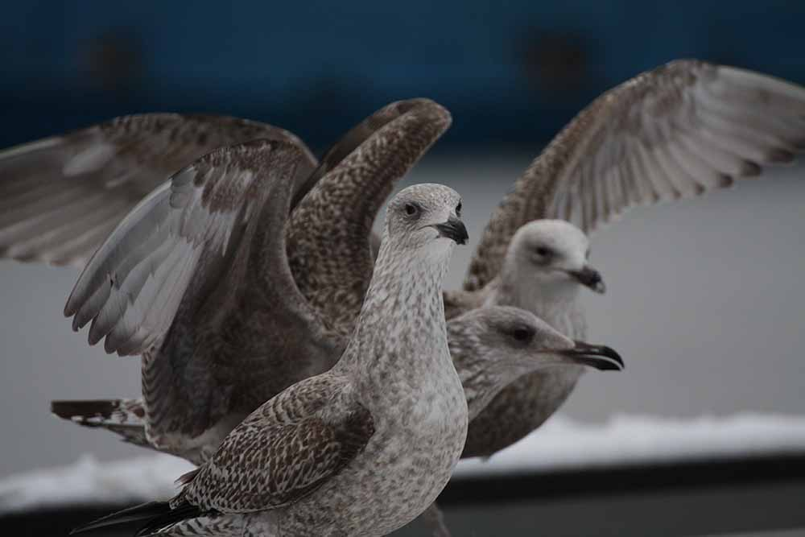

Ker je foto oprema postala veliko bolj dostopna in lažja za uporabo, se je ne uporablja več zgolj za novinarstvo. Glede na osrednje elemente fotografij delimo hobi ali poklic na več tipov.

Pri tem stilu fotografije so osrednji elementi ponavadi ljudje, družine, dojenčki, včasih tudi hišni ljubljenčki. Slike nastajajo v kontroliranem okolju, ki ga imenujemo studio. Opremljen je z večimi svetlobnimi viri, ki zelo dobro osvetlijo osrednji element in se znebijo močnih senc (razen če so sence namen fotografiranja). Ker je prostor dobro osvetljen in osrednji element večinoma statičen, ekspozicijski čas ni tako važen, ker pa je prostor odlično osvetljen, lahko fotograf vedno slika pri krajših ekspozicijah (1/500, 1/1000). Iz istega razloga vrednost ISO tudi ni tako važna, ponavadi se jo pusti dokaj nizko, da se znebimo morebitnega šuma. Kar pa je pomembno, pa so objektivi. Pri slikanju portretov fotografi uporabljajo objektive z čim bolj odprto zaslonko oz čim nižjimi f vrednostmi (f/1.4, f/1.8, f/2.6), saj fotograf želi subjekt čim bolj ločiti od ozadja. Goriščna razdalja objektiva ni tako pomembna saj ima fotograf ponavadi veliko prostosti za premikanje po prostoru (ponavadi okoli 35-70mm)
Kot naslov pove so tu osrednji elementi divje živali in ker so lahko zelo nepredvidljive in plašne, fotografi slikajo is velikih razdalj. Pomagajo tudi kamuflažna oblačila in veliko potrpežljivosti. Da so lahko fotografi umaknjeni, a še vedno dobijo detaljne slike uporabljajo objektive z goriščno razdaljo vse od 100 pa do 600 mm. Odprtina zaslonke tu ni tako pomembna saj tako veliki objektivi, oz njihova goriščnica poskrbi za globoko globinsko ostrino. Vendar pa, ker so pogoji slikanja lahko zelo nepredvidljivi in morajo fotografi slikati tudi zgodaj zjutraj in pozno zvečer, ko ni optimalne svetlobe in ker se živali lahko hitro premikajo in je potreben krajši ekspozicijski čas, je tudi nižja f vrednosti bolj zaželjena, da ni potrebno preveč višati občutljivosti tipala in s tem vnašali veliko digitalnega šuma.
Športna fotografija je zelo podobna slikanju divjih živali, le da imamo tu veliko lepše pogoje. Še vedno potrebujemo objektive z visoko goriščno razdaljo in slikati moramo z kratko ekspozicijo. Ker pa so športne dvorane ali zunanji stadioni, zelo dobro osvetljeni, imamo veliko več prostosti z nastavljanjem zaslonke in vrednosti ISO. Težavnost pa se pokaže, ko je treba vedeti kdaj pritisniti na sprožilec, da ujamemo želem trenutek v času.
Ter dokaj preprosta je tudi fotografija pokrajine, kjer ima fotograf čisto prostost nad vsemi nastavitvami. V večini primerov se uporablja stativ torej tudi daljša ekspozicija, nebo zabrisala fotografije (seveda če se pokrajina ne premika sama - veter etc). Uporabljajo se objektivi s krajšo goriščno razdaljo, od širokokotnih objektivov (10-20mm) do širših objektivov (24-50mm).
Poznamo pa še stil, ki je v svetu fotografov malo manj razširjen. Astrofotografija. V tem stilu, slikamo "bližnja" nebesna telesa, kot so Luna, Sonce, Mars in ostale planete v našem osončju. Slikamo pa lahko tudi bolj oddaljene stvari, kot so prelepe galaksije, meglice, ostanke supernov, mimoidoče komete, itd. V svetu astrofotografije se da marsikaj in je veliko prostora za rast in učenje. Hobija se lahko udeležijo čisti amaterji z navadnim zrcalno-refleksnim fotoaparatom, kot malo bolj resni entuziasti z večjo in boljšo opremo.